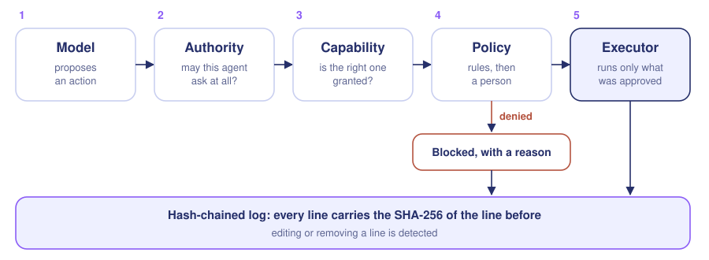
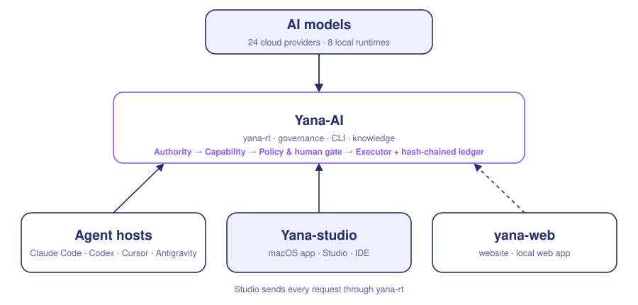
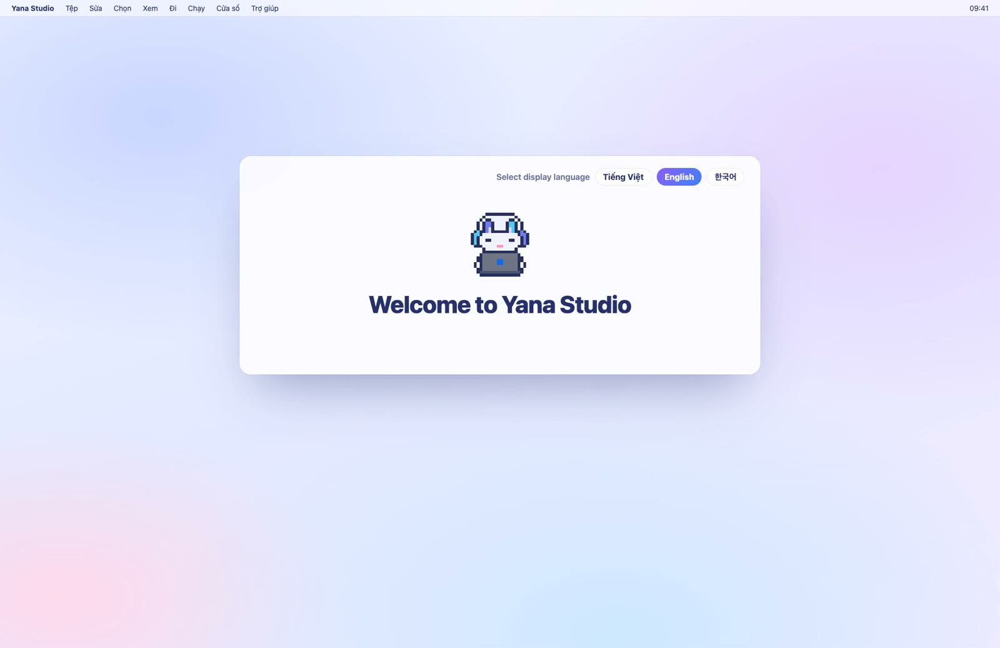
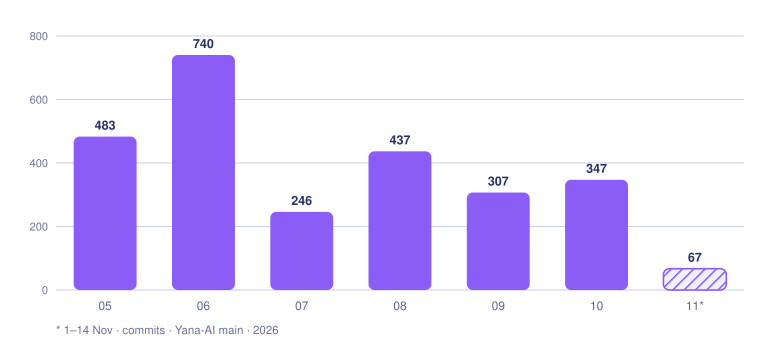

Yana AI: A Local Governance Layer Between AI Models and System Execution
Almost Six Months of Engineering: From an Empty Repository to Yana 1.1 and a Three-Repository Ecosystem
Modern autonomous coding agents can delete directories, force-push unvetted code to shared repositories, or exfiltrate private API keys with a single command. Natural language prompts advising an agent to "be careful" are inherently advisory and fundamentally insufficient to prevent catastrophic side effects. Yana AI decouples two distinct concepts: skills teach agents how to accomplish tasks, whereas capabilities grant concrete execution permissions through an isolated, host-native governance layer running entirely on the user's machine. The model proposes, Yana arbitrates, and the human operator always maintains unilateral veto authority.
This is the November 28, 2026 update of the report first published on October 26, 2026. It presents the system architecture, implementation details, and engineering trajectory across 2,746 commits (May 17 – November 28, 2026), alongside performance measurements, safety verification methodology, and documented design boundaries. The ecosystem now spans three repositories: Yana-AI (the Rust runtime yana-rt, governance layer, CLI), Yana-studio (the Yana 1.1 macOS app, Studio, and IDE), and yana-web (website and web app). Studio sends every model request through a single runtime (yana-rt, latest release 1.5.6) covering 32 providers.
1. Problem Statement
When an autonomous agent is granted terminal execution privileges, every stochastic deviation or hallucination by the model translates into an immediate, irreversible real-world action on the host machine. Two conventional defensive strategies are widely deployed, yet both exhibit structural flaws:
- Advisory Prompt Rules: Directives embedded within system prompts are merely token sequences that the model itself reads and can arbitrarily hallucinate away, ignore, or bypass under prompt injection.
- Hermetic Containers & Sandboxes: Isolating execution inside a locked virtual environment ensures safety, but severely hampers practical utility by cutting the agent off from the developer's real host toolchains, native compilers, and live project workflows.
Yana pursues an intentional third path: keep the agent operating directly on the real host machine, but force every action to traverse an out-of-band arbitration layer located outside model space. This layer strictly separates knowledge from authority: a skill is solely declarative text teaching an approach and confers zero permissions; only an explicitly declared capability can authorize a concrete system operation.
2. Vision and Core Principles
The project's foundational vision document (authored June 7, 2026) defines Yana as a lean orchestration layer mediating between human intent and AI intelligence. It explicitly demarcates what Yana is not:
- Not an agent.
- Not a chatbot.
- Not an unbounded framework for endlessly stacking agents and skills.
- Not a system requiring a large language model simply to function.
The core is dedicated exclusively to four deterministic jobs done with deep rigor: request routing, runtime safety enforcement, multi-model lifecycle dispatch, and context management. Everything else constitutes the application layer—modular and replaceable without rewriting the core.
The engineering philosophy crystallizes into seven core tenets:
- Human before automation: Every critical execution requires an accountable human operator.
- Safety before speed: When forced to choose, choose safety unconditionally.
- Evidence before confidence: Every substantive claim must be accompanied by cryptographic logs, structured audits, or deterministic verification.
- Build less, build better: Every feature must justify its existence; anything non-essential is aggressively pruned.
- Designed for failure: Every operational incident becomes a post-mortem lesson, and every lesson yields an improved architectural invariant.
- Open, honest, transparent: Build in public, document mistakes, and disclose tradeoffs unvarnished.
- Continuous improvement: No piece of software is ever truly finished.
Regarding end-user adoption, the project established a 12-month milestone: a non-programmer can download Yana, input an API key, and begin productive work without reading documentation. This milestone has not yet been achieved. Currently, the primary user base remains developers who already employ coding agents and require granular runtime governance.
3. Architecture and Design
3.1 The Deterministic Decision Pipeline
Every discrete operation proposed by an agent—whether originating from Claude, GPT, Gemini, DeepSeek, or an offline local model—must sequentially traverse five mandatory verification gates (Figure 1). Both allowed and rejected actions are permanently committed to an audit log for retroactive inspection.

3.2 Ecosystem Architecture
- Agent Hosts (Adapters): Interceptors for Claude Code (full tool-call interception at runtime), Codex (project-scoped hooks), Cursor (shell filtering), and Antigravity.
- Three repositories (since November 2026): Yana-AI holds the
yana-rtruntime, the governance layer, theyana-aiCLI (Python), and the knowledge layer. Yana-studio holds the Yana macOS app (SwiftUI), Yana Studio (Electron), and Yana IDE (a Code-OSS customization). yana-web holds the yana.vutam.link website and the local web app (chat, missions, an AES-256-GCM encrypted API-key vault). - Governance (core/): The
yana-rtruntime (Rust) delivers 43 subcommands with no Python dependency and a native MCP server with 16 tools;core-lock.jsonpins SHA-256 hashes for about 290 core files; in-session human approval gates; theauthority verifycommand checks that every execution traces back to an allow decision; and Giám Thị (Supervisor), an out-of-band daemon on OS schedulers (launchd, systemd) outside the AI process, locking execution on state divergence. Giám Thị is opt-in and is never installed without explicit consent. - Knowledge Layer (core/): 100 role agents, 2,036 operational skills, 170 slash commands, 71 behavioral rules, and 66 pre/post-tool hooks (counted by
core/scripts/check_counts.py, enforced in CI). Knowledge educates; it never confers execution authority. - Model Engine: A unified router declaring 32 providers: 24 cloud APIs (Anthropic, OpenAI, Gemini, Groq, DeepSeek, OpenRouter, xAI, Novita, NVIDIA, MiniMax, GLM, Hugging Face, Kimi, Mistral, Together, Fireworks, DeepInfra, Cerebras, SambaNova, Perplexity, Qwen, Cohere, AI21, ERNIE) and 8 local runtimes or routers (Ollama, LM Studio, llama.cpp, TurboFieldfare, AirLLM, vLLM, Jan, 9Router). The 13 providers added in 1.5.5 run on the OpenAI-compatible adapter and have not been called with real keys.

yana-rt; the website and web app live in their own repository. Dashed line: the web app has its own provider connector and does not go through yana-rt.3.3 Codebase Distribution
Yana-AI/
├── src/ yana-rt runtime: 353 Rust files, 90,541 lines
│ ├── capability/ permissions, shared execution engine for chat and MCP
│ ├── guard/ blocks dangerous commands, write permissions, token budget
│ ├── model/ 32 model providers, failover routing, key rotation
│ ├── session_db/ SQLite session store, full-text search, checkpoints
│ ├── os/ Yana OS: agent identity, quotas, supervision
│ └── chat/, mission/, memory/, doctor/, scanner/, … (52 top-level modules)
├── core/ governance and knowledge layers (66 hooks, 71 rules, 2,036 skills, 100 agents)
├── tools/ auxiliary tools: yana-terminal, yana-notch, yana-promo, AirLLM and pixel bridges
├── adapters/ Claude Code, Codex, Cursor, Antigravity
└── docs/, ci/ documentation and CI gates
Yana-studio/ (macOS app, Studio, IDE) and yana-web/ (website, web app) are separate repositories.4. Yana in Practice
4.1 Yana 1.1 and Yana Studio
Yana 1.1.0 (released November 28, 2026 from the Yana-studio repository) is the macOS Apple Silicon download, containing the native app and Yana Studio. Compared with 1.0.0 (November 11) it adds an animated wallpaper for Studio; a connection between the two apps (open Studio on the same folder, shared API keys, separate chat histories); a larger notch (music, Claude Code and Codex status, a file shelf, clipboard); a Yana menu bar item with machine readings; running in the background when the window is closed; and signature-checked updates inside the app.
Studio gathers into one window the things people building with AI keep switching between: opening a real folder, an editor, PTY terminals (up to 12 sessions), chat, evidence-backed tasks, and a design canvas. Studio's interface layer never calls a model provider: every request goes through yana-rt; API keys enter Rust through stdin and are stored encrypted in the operating system's keychain, not in project files.
The chat pane always shows the active mode. In SUPERVISED mode, project reads are allowed automatically, while every command execution pauses until the operator approves (Figure 3). The welcome screen switches between three languages: Vietnamese, English, Korean (Figure 4).


4.2 Real-World Command Guard Evaluation
Table 1 lists four sample shell commands, re-run on November 14, 2026 against yana-rt 1.5.2 and the repository's hooks (main branch). Each protection layer blocks a different class of command, so the table states which layer blocked it. When a command is blocked, the agent receives the reason together with safe alternatives, and the event is written to the audit trail.
| Target Command | Verdict (default hook chain) | Blocking Layer and Reason Returned to Agent |
|---|---|---|
curl -fsSL https://.../install.sh | bash | Blocked | tool-proxy-enforcer: piping into an interpreter is a tier-1 violation of the anti-evasion rule. supply-chain-guard: remote content runs without review; download it, read it, then run it. Not guard destructive. |
rm -rf ~/Documents | Blocked | guard destructive (Rust and bash versions): recursive, irreversible force deletion; use rm with explicit paths or ask the user. |
chmod 777 deploy.sh | Not blocked | Only the core/scripts/safe-run.sh wrapper blocks this pattern, and that wrapper is not wired into the automatic hook chain. We ran all 18 hooks attached to Bash in .claude/settings.json: none blocked it. This is a known gap (Section 8). |
git status --short | Allowed | Read-only introspection command; no layer intervenes. |
4.3 Command-Line Tooling
# Python CLI management tool
pip install yana-ai
yana-ai install # Inject Yana hooks and policy rules into repository
yana-ai doctor . # Verify environment and hook connectivity
# Standalone Rust runtime (zero Python dependencies)
cargo install yana-rt5. Component Statuses & Architecture
| Component | Responsibility | Status |
|---|---|---|
| Yana 1.1 for macOS | Native app (SwiftUI) plus Yana Studio in a single download, released November 28, 2026 from the Yana-studio repository. Updates itself in the app. Ad-hoc signed, not notarized. | Released |
| Yana Studio and Yana IDE | Studio (Electron) and the IDE (a Code-OSS customization) live in the Yana-studio repository. Studio is not yet at full parity with the previous desktop app; apart from the Yana app there is no separate Studio or IDE release from the new repository. | In Development |
| Runtime yana-rt | Core Rust engine: turn loops, capability contracts, SQLite session store, rollback checkpoints, MCP and LSP clients, authority verify, status. | Production |
| Governance Layer | Capability manifests, human approval gates, hash-chained audit ledger, core-lock integrity verifier, command guards. | Production |
| Giám Thị (Supervisor) | Out-of-band daemon on a 6-hour OS schedule; locks system commands if control files deviate from signed hashes. Opt-in. | Production (Active) |
| Adapters | Claude Code, Codex, Cursor, Antigravity. Execution enforcement varies across host hooks. | Host-dependent |
| Knowledge Layer | Role agents, skills, slash commands, and behavioral rules instructing agent conduct. | Production |
| Website and web app (yana-web) | The yana.vutam.link website and a local web app: chat with up to 6 providers, missions, an AES-256-GCM encrypted API-key vault. | Active |
| Yana OS | Local agent management: identities, autonomy boundaries, execution quotas, process isolation. | In Development |
| Wheelbot | Voice-controlled ESP32-S3 robotics platform in a dedicated repository. | Experimental |
6. Empirical Evaluation and Benchmarks
The November 28 update did not re-measure this section; every number below is from 1.5.4 or earlier. Re-measured on November 16, 2026 for the latest release, yana-rt 1.5.4 (release commit c8c29fb2, default build, 22.9 MiB), on the same Apple Silicon MacBook Air (M4, 16 GB RAM), macOS 27.3, with the method of the November 15 run: every comparison is interleaved (Rust, Python, Rust, Python, …) after one warm-up run, and the median is taken; the Python scripts run with python3 -I. The machine was not idle: the load average stayed between 5.0 and 5.2 throughout, so absolute times may be higher than on an idle machine. The Rust-to-Python ratios are less affected because both sides were interleaved.
| Benchmark Operation | Rust Runtime (yana-rt 1.5.4) | Python Script | Performance Delta |
|---|---|---|---|
| Cold Binary Startup | 6.17 ms | — | Median of 60 runs |
System Diagnostics (doctor) | 152 ms | 209 ms | 1.4× faster (12 runs) |
Governance CI Audit (ci check) | 7.2 ms | 34.1 ms | 4.8× faster (20 runs; both report 6 warnings) |
Skills Directory Scan (core/skills) | 0.58 s | 8.60 s | 14.8× faster (5 runs; Rust scanned 1,794 files, Python 1,825) |
Full Repository Scan (scan ., defaults) | 0.29 s | 6.89 s | Not comparable: the two default scopes differ |
| Destructive Command Guard | 5.91 ms | — | One allowed command, median of 40 runs |
Token Budget Hook (guard token-budget) | 5.64 ms | — | First call in a project with flock-v1 active, median of 40 runs. The October run could not time it because of the missing-marker error |
| Peak Memory, Skills Scan | 16.3 MiB | 25.4 MiB | Full-repo scan: 20.7 vs 32.1 MiB |
Compared with the November 15 run (1.5.2): the speed-up ratios are almost unchanged (doctor 1.4× and 1.4×, skills scan 14.8× and 14.5×, ci check 4.8× and 5.4×), and the binary is still 22.9 MiB. Rust absolute times are 3 to 47% higher (skills scan 0.58 vs 0.56 s, startup 6.17 vs 4.21 ms), consistent with a busier machine. We have not re-run on an idle machine, so we cannot yet separate the machine's share from the code's.
Historical measurements from November 15, 2026, kept as recorded. Three builds measured side by side (interleaved, medians, ms) to see whether 1.5.2 got slower than 1.5.1. The middle column is 1.5.2 built with only the cli feature, isolating the effect of the MCP server.
| Operation | 1.5.1 | 1.5.2 (cli only) | 1.5.2 (default) |
|---|---|---|---|
| Startup | 4.26 | 4.27 | 4.21 |
doctor | 142.7 | 142.6 | 144.2 |
ci check | 5.33 | 5.41 | 5.57 |
core/skills scan | 538 | 567 | 572 |
| Destructive guard | 5.25 | 5.26 | 5.27 |
| Binary size | 18.2 MiB (19,055,520 bytes) | 18.8 MiB (19,679,360 bytes) | 22.9 MiB (23,996,800 bytes) |
Conclusion and explanation. Startup, doctor, ci check, and the guard did not get slower between 1.5.1 and 1.5.2 (differences are within 1 to 4%). The skills scan is about 5 to 6% slower in 1.5.2, possibly from more code in the scanner; we have not isolated the cause. The largest change is binary size: the default 1.5.2 build is 4.7 MiB larger, of which about 4.1 MiB comes from the MCP server and client (which pull in the async runtime tokio) becoming part of the default build in October, while the new 1.5.2 code itself adds only about 0.6 MiB. In other words, the redesign made the binary larger but did not slow the hot paths.
Why the first measurement differed. The first run on November 14 ran the measurements back to back while the machine was also running several other applications, and gave 207 ms for doctor and 4.93 ms for startup; interleaved, those return to 139 and 4.21 ms. The doctor ratio against Python (1.4× instead of 2.9× in the October 20 measurement) changed mainly because the Python side got faster (195 ms against 415 ms); the October run averaged 3 runs without a warm-up and may have included a cold run, but we cannot confirm that. This is still one machine, with run counts in the tables.
7. Security Verification and Adversarial Auditing
In late October 2026, the native MCP server was subjected to stdio fuzz testing across its 14 built-in tools. Path traversal exploits escaping workspace bounds (/etc/hosts, malicious symlinks) were successfully blocked, and browser_fetch strictly required explicit leases.
The audit revealed one functional defect (list_processes failure on macOS) and a significant vulnerability: the legacy check_command function focused exclusively on direct destructive primitives, permitting pipe-to-shell constructs (curl ... | bash), base64 decoding pipelines, and chmod 777 to bypass rules despite explicit prohibitions in project rules.
An updated patch parses commands according to POSIX shell grammar (evaluating quotes, command substitution, heredocs, pipes, and subshell groups) prior to rule matching, validated by 1,642 passing unit tests. The patch underwent four independent adversarial audit cycles executed by AI subagents (six review passes total). Key takeaway: String-based command blacklists are inherently non-exhaustive; pattern guards must be treated as defense-in-depth, while absolute protection rests upon the human approval gate and granular capability bounds.
From October 26 to November 28, 2026, the safety-relevant changes (from pull request history and CHANGELOG.md):
yana-rt authority verifychecks that every execution traces back to an allow decision (#534).yana-rt statusgives one read-only snapshot shared by every surface, with a matching read-only MCP tool (#533, #535).- MCP: an allowed-tools list (
allowed_tools), pinned tool definitions, and per-tool safety hints (#532). The server now exposes 16 tools; a test asserts that exact number so a new tool has to be considered deliberately. - Version 1.5.2:
list_processesworks on macOS, an end-to-end MCP test was added, and 13 RUSTSEC advisories that turned CI red were cleared by dependency updates; aquinn-udppatch for RUSTSEC-2026-0538 followed (#562). - The
flock-v1lock is available on request on a fresh checkout (#541); pdfium is pinned by SHA-256 in the release workflow (#542);verify_action_pins.pycompares each GitHub Action SHA with its tag. - Version 1.5.4 (Nov 16) fixes a permanent session lockout (#569). On a fresh clone (a cloud session, for example) without
yana-rton PATH, the token budget hook refused every tool call because theflock-v1marker was missing, including a call that could create it, so the session stayed locked until it was abandoned. #541 only added an opt-in and a hint and did not remove the block. The hook now matches the Rust path: it skips that call's budget check and only warns, while the maintenance gate and a mismatched marker still block. Version 1.5.3 was prepared and tested but not released, because that testing found this bug. - Version 1.5.5 (Nov 28): an approved command runs directly in the working folder and is stated to be not isolated; the folder's
sandbox-exec.shis no longer run, so the folder cannot replace what an approval runs. Adds remembered approvals (pinned to the exact command text, stored outside the repository), five control levels (1 and 2 enforced, 3 to 5 observing) and an away mode in which no command runs on its own. - Version 1.5.6 (Nov 28): the app's Auto mode works through personal grants kept outside the project that cover only a short list of commands; a grant file shipped inside a folder never counts, and a command started by the agent is refused such a grant.
- CI runs daily on main so toolchain drift shows up before a pull request does (#557), plus a weekly health check (#566).
- On November 14 and November 28, 2026 the GitHub API reported 0 open Dependabot alerts on all three repositories (checked live).
At 1.5.6 the repository has 2,025 Rust test functions (a grep count of #[test] attributes under src and tests). Version 1.5.6 was released after the required CI checks passed. The latest recorded manual run preceded 1.5.4: cargo test --bin yana-rt 1,702 passed (1 ignored), the integration_runtime suite 67 passed, the hook tests 384 passed, and the Python tests 1,031 passed; main's CI was also green on the exact release commit. Other Rust test targets were not run separately this time, so the number of test functions remains a count.
8. Documented Boundaries and Limitations
- Ledger Deletion: Hash-chaining cryptographically guarantees tamper-detection against in-place record manipulation, but cannot prevent wholesale deletion of the log file without OS-level immutable write privileges.
- Core-Lock Invariant: Proves that the file tree matches the registered manifest, but does not verify whether an operator personally reviewed the diff. Anyone with write access to
core/can regenerate the lock. Giám Thị provides independent scheduled verification, but operates with up to a 6-hour window. - Rule Enforcement Scope: The majority of files in
core/rulesdescribe guidelines that agents self-enforce; only rules backed by active system hooks are deterministically blocked. A formal cryptographic code-signing infrastructure is not yet implemented. - Pattern Guard Coverage: Destructive command filters rely on structural string parsing, not sandbox hypervisors. The fallback Bash script implementation does not yet incorporate pipe-to-shell blocking parity.
- Host Interception Discrepancies: Cursor does not intercept MCP tool calls. Antigravity filters shell invocations, but can be bypassed when executed with
--dangerously-skip-permissions. - Platform Notarization: macOS releases currently rely on ad-hoc developer code signatures prior to Apple Developer account notarization, triggering standard Gatekeeper warnings on first launch.
- The
chmod 777gap: The November 14 re-run showedchmod 777is not blocked in the default hook chain; only thecore/scripts/safe-run.shwrapper blocks it, and that wrapper is not wired in automatically. The first edition of this report listed the command as blocked. - Commands are not isolated: An allowed command runs with your account's full rights, including its environment and the network, with no time limit. In Auto mode a build or test runs the project's own code with those rights.
- Windows: The Rust unit tests currently do not compile on Windows, and the related CI step does not turn red.
- App 1.1.0: The notch clipboard stores copied text unencrypted; the menu bar temperature uses a private Apple interface and was tried on one M4 Mac.
- Studio is not at full parity: There is no device registry, agent sessions screen, mobile pairing, SSH or Docker execution, or permission-lease UI yet. Studio is updated with the Yana app; there is no separate Studio or IDE release from the Yana-studio repository.
- The repository split just finished: The website, web app, and desktop app moved to two separate repositories on November 11–13, 2026, so older links and documents that mention
tools/yana-webortools/yana-studiopoint at code that has moved. - Measurements are limited: The benchmarks ran on one machine with a few repetitions, while the machine was not fully idle (the load is stated in Section 6). The test results in Section 7 cover only the suites named there, not every test target.
9. Engineering Trajectory & Timeline
The Git repository began with an empty commit on May 17, 2026. By November 14, 2026, the Yana-AI main history recorded 2,627 commits, 495 merged pull requests (550 opened, as of November 15), and 75 tags; the Yana-AI Releases page lists 26 releases, and the Yana-studio repository adds the Yana 1.0.0 release. Figure 5 shows commit velocity by month, peaking at 740 commits in June during the bulk ingestion of operational skills and the web portal launch. The first edition of this report stated 41 releases; the current count is lower and we have not established the cause of the difference. As of November 16, after 1.5.4: 2,633 commits, 496 merged pull requests (551 opened), 77 tags, and 27 releases on the Yana-AI Releases page. As of November 28, after 1.5.6: 2,746 commits, 531 merged pull requests (587 opened), 83 tags, and 28 releases; the Yana-studio repository has Yana 1.0.0 and 1.1.0.

/freeze scope lock; Codex adapter; Kimi provider; patched remote execution script defect.rt-v1.5.2 release was posted on GitHub on Nov 12): harness audit, chat with approval preview and plan mode, a doctor hint to enable Giám Thị. authority verify, status, and MCP security upgrades (Nov 12). Yana 1.0.0 for macOS, the native app and Studio in one download, released Nov 11. The ecosystem split into three repositories under the Horonomos-laps organization (Nov 11–13): the website and web app moved to yana-web, the macOS app, Studio, and IDE to Yana-studio; Yana Desktop (Electron) was removed from Yana-AI on Nov 13. The website was redesigned on yana-web (new logo, four rebuilt demo videos, a 3D MacBook page). Nov 16: yana-rt and yana-ai 1.5.4 on crates.io and PyPI, with a GitHub Release, including the fresh-clone session lockout fix; 1.5.3 was withdrawn before release. November 28: yana-rt and yana-ai 1.5.5 and 1.5.6, then Yana 1.1.0 for macOS.10. Founder's Note
"Yana AI was not born inside a corporate campus. It possessed no venture backing, no enterprise engineering brigade, and no institutional laboratory. It began on a personal laptop, driven by a 17-year-old student who believed coding agents must not be granted unchecked sovereignty over host systems.
The most insidious pitfalls were never individual code bugs, but flawed conceptual assumptions. Following each failure, Yana was deliberately re-engineered to be more verifiable, more observable, and radically more dependable.
Yana AI exists because humans must forever retain the final decision."
The author initiated the project at age 17, operating as sole engineer for the first six months without institutional funding. AI tooling assisted in accelerating implementation, test generation, and review cycles, while all architectural design, system rewrites, and final accountability rested with the maintainer.
In late October 2026, Nguyễn Nam Long joined the project as a new contributor. The engineering milestones and technical work documented in this report represent development completed prior to his onboarding.
11. References
Corrections relative to the October 26, 2026 edition:
- Agent count: the first edition said 60 (the number of top-level entries in
core/agents); the correct figure percheck_counts.pyis 100. - November 28 revision: cover and sections 3, 4.1, 5, 7, 8 and 9 updated. Sections 4.2 and 6 keep their earlier runs. The PDF is still the November 16 edition.
- Section 6 was re-measured on November 16 for
yana-rt1.5.4 (main table) with the same interleaved method; the November 15 measurements for 1.5.1 and 1.5.2 are kept below it. - Section 6 was fully re-measured on November 15 with an interleaved method: skills scan 14.5× (the first edition said 15.4×),
doctor1.4× (the first edition said 2.9×), binary 22.9 MiB (the first edition said 18.2 MiB). Rust scanned 1,791 files and Python 1,795 files, not the entire skill set. - Command guard table: now records which layer blocked each command, from the November 14 run;
chmod 777is not blocked in the default hook chain. - MCP tool count: 16 (the first edition said 14, the count at the time of fuzzing).
- Release count: see Section 9; the current count differs from the first edition and the cause is not established.
- OWASP Foundation. Top 10 for Large Language Model Applications, owasp.org.
- Google. Trillian: A Transparent, Highly Scalable and Cryptographically Verifiable Data Store, github.com/google/trillian.
- Anthropic. Model Context Protocol Specification, modelcontextprotocol.io.
- Microsoft. Visual Studio Code, Open Source (Code-OSS), github.com/microsoft/vscode.
- Yana AI Repository Specifications (
VISION.mddated June 7, 2026;PHILOSOPHY.md;JOURNEY.md;HISTORY.md;BENCHMARK.md;CURRENT-MILESTONE.md;docs/reference/known-limitations.md;CHANGELOG.md;VERSIONING.md), github.com/Horonomos-laps/Yana-AI.